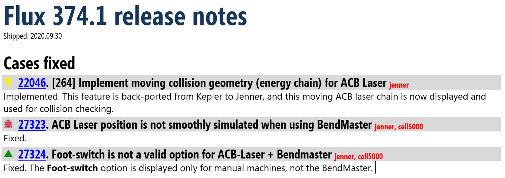
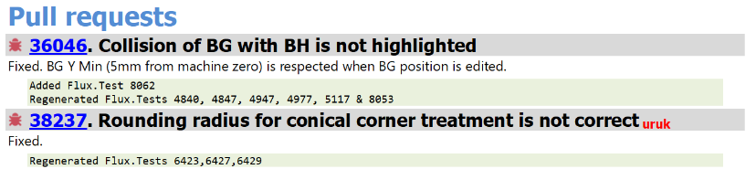
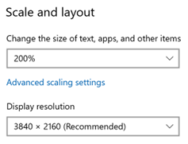
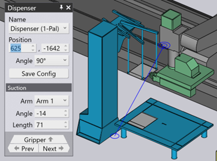

Release notes for Flux
Writing Release Notes for Flux
The Release Notes for Flux are created using the following distributed process.
Flux typically ships every Monday, and we always have a build in progress. The release notes for that upcoming build are stored in the Flux.Main.docx shared file in the NextBuild OneDrive folder.
When a Case is Fixed
-
When somebody writes code for a case and creates a pull request, they should update this document and add the release notes to the Pull request section. This is in addition to updating the release notes on Fogbugz itself.
-
The case may go through one or more rounds of pull request and rewrite. If any of these changes may update the release notes, they should be updated in the docx file as well (so the release notes are always up-to-date and match the contents of the current pull request).
Updating the release notes
-
The document looks as shown below:

-
Install the Segoe UI, Segoe Condensed and Ubuntu Mono fonts.
-
Install the Segoe Condensed font if you don’t have it – it is used for the actual case titles (Heading 3 style). You should already have the SegoeUI
-
Use the icons in the template at the top of Flux.Main.docx for feature, bug and refinement.
If the case is a feature or refinement the first word should be Implemented and then the related notes.
If it is a bug, it should be Fixed and then the related notes.
If you have added a test case you should add a note like (Added Flux.Test 16000) in FogBugz.
If you have regenerated test cases you should add a note like (Regenerated Flux.Test 3123, 3844) in FogBugz.
In the Flux.Main.docx, add the note about test as shown below:

-
Each case ID number is actually a link to the case in Fogbugz.
To insert this link, select the number (without the trailing .) and press Ctrl+K. Type in the link, which looks like https://metamation.fogbugz.com/f/cases/27323
-
Keep the sections ordered by Case ID number
-
Add the correct milestone marker at the end of the title with the correct spacing, capitalization:
-
If the case is not assigned to any milestone remove the placeholder milestone
-
Keep the milestone in lower case (not Jenner but jenner)
-
Have exactly one space between the text and the milestone indicator (not 0, not 2)
NoteFlux.Main.docx need not be updated for cases in internal projects like FluxDev, FluxTinker etc.
-
Taking Screen-shots
-
We want all our screen-shots to look consistently sized. So correct scaling is important. First, determine what DPI scaling you are running your monitor at (right click on the desktop, choose Display settings and inspect this):

In this case, the monitor is running at 200%. Figure out the corresponding value for your setup.
-
Take a screen-shot and crop it as tight as possible so only the area of interest is visible. We don’t want large empty screens filling up space in the release notes. For example:

NoteWhen taking screenshots to include in release notes, run Flux without developer mode (flux.exe -notdevelopermc). If you run Flux in developer mode, there is some additional tooltips displayed (which the end-user will not see). Also, many Globs have some special ‘green’ buttons / settings that are visible only in Developer mode, and we don’t want that appearing in screen shots. -
Use a tool like Paint.Net for this cropping. Then, scale the image in Paint.Net to normalize it to 100%. I scale by 50% since my screen DPI scaling is 200%. If your screen DPI scaling were 150%, you should scale your screen-shots by 67% to normalize them to 100% size. If your screen DPI scaling were 125%, you should scale your screen-shots by 80% to normalize them to 100% size.
-
Then, paste the image into new Word document. Select the image and further scale it by 50% in Word. (Right click on the image, choose Size and position and enter 50% for both width and height). With these steps we now have a uniformly scaled image.
NoteDo the scaling in 2 steps as described here – don’t short cut by doing the additional 50% scaling in Paint.net – that loses too many pixels and the final image is not sharp enough. The scaling in Word (unlike the one you are doing in Paint.Net) preserves all the pixels of the image and the detail is visible when you zoom in. -
Now, insert this scaled image into Flux.Main.docx
When a Pull Request is merged
-
When the pull request is finally approved and merged into main, the person doing the merge will move that release note from the Pull request section to the Cases fixed section.
-
If the fix is required in an older build, whoever does the cherry-pick should move the fix from Flux.Main.docx to the appropriate document like Flux.Canopus.docx
When a Build is Shipped
-
The Flux.Main.docx is saved with a name like Flux.496.docx in the Flux/ReleaseNotes Onedrive folder below:
-
All sections except the Cases Fixed section are deleted from this DOCX (for example the Pull request section, the Template section etc). The appropriate build number and shipping date are added at the top, and the file is saved again for permanent archive.
-
The file is then exported to PDF (to a local folder) and used as the release notes for that build.
-
The Cases Fixed section of the Flux.Main.docx is then cleared to prepare for the next build.
|
Note
|
Flux/Bend and Flux/Cut fixes are all merged into this same release notes. There is no longer a separate Flux Cut revision number, and we will no longer append a Flux Cut release notes section to the Flux release notes. |
|
Note
|
All older release notes are archived in the ReleaseNotes OneDrive folder. |